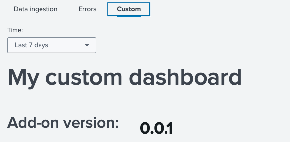
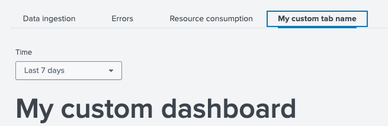

Dashboard¶
Overview¶
UCC introduces a monitoring dashboard page, which is available from v5.42.0.
Page is fully based on the UDF framework (Unified Dashboard Framework) and Splunk UI components. More information can be found here.
The dashboard page configuration is generated if the ucc-gen init command is used.
The dashboard page is optional, you can delete it from configuration if you
don’t need it in your add-on.
The dashboard page provides some additional information about the add-on operations to increase the visibility into what the add-on is actually doing under the hood.
As of now, 4 pre-built panels are supported:
- Overview
- Data ingestion
- Errors in the add-on.
- Resource consumption.
IMPORTANT:
- To fully use the panels available on the monitoring dashboard, use the
solnlib.log’sevents_ingestedfunction, to record events. Due to some changes in dashboard queries in UCC version 5.49.0, you must usesolnlibin at least version 5.2.0. - Sometimes, especially with a short data collection period, the first chart in the overview section may not display data when the all time period is selected.
This is because the
joinfunction used to aggregate data volume and number of ingested events does not have a default span for the all time range. Over time, the problem should automatically disappear.
The above events_ingested function takes 5 positional parameters which are:
loggermodular_input_namesourcetypen_eventsindex
and 2 optional named parameters:
accounthostlicense_usage_source(available from version 5.2)
If you additionally provide account and host arguments - you will get a better visibility in your dashboard.
Please note that as a modular_input_name you should pass the full input in the format: demo_input://my_input_1.
If for your add-on license usage file writes data in a source format that doesn’t fit the above, the events_ingested function in solnlib v5.2
has an additional, optional parameter license_usage_source that allows for proper data correlation
between license usage and data written by the events_ingested function.
Example of an events_ingested function:
from solnlib import log
log.events_ingested(
logger,
"demo_input://my_input1",
"my_sourcetype",
2,
"my_index",
account="my_account"
)
as a reference, you can check the input in the demo add-on described here.
IMPORTANT: From version v5.46.0 the error section has been expanded to include a division into error categories. This solution is based on additional exception logging functions:
log_connection_errorlog_configuration_errorlog_permission_errorlog_authentication_errorlog_server_error
Above functions take 2 mandatory parameters:
logger- your add-on loggerexc- exception thrown
and 3 optional parameters:
full_msg- if set to True, full traceback will be logged. Default: Truemsg_before- custom message before exception traceback. Default: Nonemsg_after- custom message after exception traceback. Default: None
Additionally, function log_exception has a new, mandatory parameter exc_label thanks to which you can log your own, non-standard types.
All of the above is available in the log module of the solnlib library from version 5.0. Please make sure you are using this version of solnlib library if you want to take full advantage of the extended error panel.
Example of a logging functions:
from solnlib import log
...
except MyCustomException as e:
log.log_exception(logger, e, "my custom error")
except UnauthorisedError as e:
log.log_authentication_error(logger, e)
except PermissionError as e:
log.log_permission_error(logger, e, msg_after="test after")
except ConnectionError as e:
log.log_connection_error(logger, e, msg_before="test before", msg_after="test after")
except AddonConfigurationError as e:
log.log_configuration_error(logger, e, full_msg=False, msg_before="test before")
except ServiceServerError as e:
log.log_server_error(logger, e)
except Exception as e:
log.log_exception(logger, e, "Other")
By default, the error section displays events logged with the ERROR level, but since version 5.50 UCC allows the user to define what level of logs should be displayed in this section. There are two levels to choose from:
- ERROR
- CRITICAL
"dashboard": {
"panels": [
{
"name": "default"
}
],
"settings": {
"error_panel_log_lvl": [
"ERROR",
"CRITICAL"
]
}
}
Configuration¶
To be able to add a monitoring dashboard page to an existing add-on, you need to adjust your globalConfig file and include a new “dashboard” page there. See the following example:
{
"pages": {
"configuration": {
"tabs": [
...
],
"title": "Configuration",
"description": "Set up your add-on"
},
"inputs": {
"services": [
...
],
"title": "Inputs",
"description": "Manage your data inputs",
"table": {
...
}
},
"dashboard": {
"panels": [
{
"name": "default"
}
]
}
},
"meta": {
...
}
}
Migration path¶
Default, XML-based dashboard will be migrated during the build process. All the necessary changes will be made automatically.
Custom components¶
UCC also supports adding your own components to the dashboard. To do this, create a custom_dashboard.json file in the add-on’s root directory (at the same level as globalConfig.json).
This definition json file must be created according to the UDF framework standards described here
custom_dashboard.json location:
<TA>
├── package
...
├── custom_dashboard.json
├── globalConfig.json
...
Sample custom_dashboard.json structure:
{
"visualizations": {
"custom_dashboard_main_label": {
"type": "splunk.markdown",
"options": {
"markdown": "# My custom dashboard",
"fontSize": "extraLarge"
}
},
"custom_addon_version_label": {
"type": "splunk.markdown",
"options": {
"markdown": "# Add-on version:",
"fontSize": "large"
}
},
"custom_addon_version": {
"type": "splunk.singlevalue",
"options": {
"majorFontSize": 34,
"backgroundColor": "transparent"
},
"dataSources": {
"primary": "custom_addon_version_ds"
}
},
"custom_events_ingested_label": {
"type": "splunk.markdown",
"options": {
"markdown": "# Events ingested by sourcetype:",
"fontSize": "default"
}
},
"custom_events_ingested": {
"type": "splunk.line",
"options": {
"xAxisVisibility": "hide",
"seriesColors": [
"#A870EF"
],
"yAxisTitleText": "Events ingested"
},
"title": "Events ingested by sourcetype",
"dataSources": {
"primary": "custom_events_ingested_ds"
}
}
},
"dataSources": {
"custom_addon_version_ds": {
"type": "ds.search",
"options": {
"query": "| rest services/apps/local/demo_addon_for_splunk splunk_server=local | fields version"
}
},
"custom_events_ingested_ds": {
"type": "ds.search",
"options": {
"query": "index=_internal source=*demo_addon* action=events_ingested\n| timechart sum(n_events) by sourcetype_ingested",
"queryParameters": {
"earliest": "$events_ingested_time.earliest$",
"latest": "$events_ingested_time.latest$"
}
}
}
},
"inputs": {
"custom_events_ingested_input": {
"options": {
"defaultValue": "-7d,now",
"token": "events_ingested_time"
},
"title": "Time",
"type": "input.timerange"
}
},
"layout": {
"type": "grid",
"globalInputs": [
"custom_events_ingested_input"
],
"structure": [
{
"item": "custom_dashboard_main_label",
"position": {
"x": 20,
"y": 500,
"w": 300,
"h": 50
}
},
{
"item": "custom_addon_version_label",
"position": {
"x": 20,
"y": 530,
"w": 100,
"h": 50
}
},
{
"item": "custom_addon_version",
"position": {
"x": 80,
"y": 515,
"w": 100,
"h": 50
}
},
{
"item": "custom_events_ingested_label",
"position": {
"x": 20,
"y": 550,
"w": 100,
"h": 50
}
},
{
"item": "custom_events_ingested",
"position": {
"x": 20,
"y": 580,
"w": 600,
"h": 150
}
}
]
}
}
Next, you have to add the custom panel to your dashboard page in globalConfig.json.
{
...
"dashboard": {
"panels": [
{
"name": "default"
},
{
"name": "custom"
}
]
}
...
}
By default, the custom dashboard will be added as an additional tab under the overview section called Custom.

If you would like to change the tab name from Custom to any other value, you can do it in the globalConfig.json.
Global config, from UCC version v5.47.0, has an additional settings parameter for the dashboard section. To change the name of a custom tab, add the custom_tab_name attribute in the settings.
{
...
"dashboard": {
"panels": [
{
"name": "custom"
}
],
"settings": {
"custom_tab_name": "My custom tab name"
}
},
...
}

It is possible to enable only a custom panel. To do this, remove the “default” element from globalConfig.json.
{
...
"dashboard": {
"panels": [
{
"name": "custom"
}
]
}
...
}
Data volume¶
To obtain information on data volume usage, the monitoring dashboard uses logs saved in the license_usage.log file.
By default, data filtering for a specific add-on is based on the source (s) and names of individual inputs.
e.g.
...source=*license_usage.log type=Usage (s IN (demo_addon_release_2*,my_input_2*))...
If data is saved in your add-on with different, non-standard values or if filtering logs
using the source is not possible, UCC v5.47 offers the ability to define how the search engine should
find data regarding a given add-on.
To do this, you need to add the custom_license_usage parameter in globalconfig in the dashboard -> settings section.
This parameter takes 2 mandatory items:
determine_by-> is used to determine the filtering basis. It can take one of 4 possible arguments: (“source”, “sourcetype”, “host”, “index”).search_condition-> list of strings type parameter where you can provide elements that will be used to filter events in the license usage file.
e.g. of globalConfig.json:
{
...
"dashboard": {
"panels": [
{
"name": "custom"
}
],
"settings": {
"custom_license_usage": {
"determine_by": "sourcetype",
"search_condition": [
"*addon123*",
"my_custom_condition*"
]
}
}
},
...
}
the above configuration will create the following filter query:
...source=*license_usage.log type=Usage (st IN ("*addon123*","my_custom_condition*"))...
Note:
- In the Data Ingestion table, the first column displays the
View byoptions list. When you click on any row in this column, a modal opens, showing detailed information such asData volumeand theNumber of eventsover time, visualized in charts. The modal allows you to adjust the options via a dropdown to view data for different View by options. This enables dynamic exploration of data trends for various selected inputs.